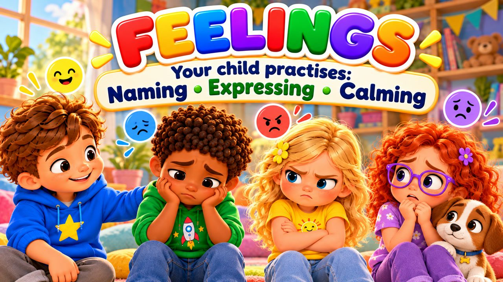
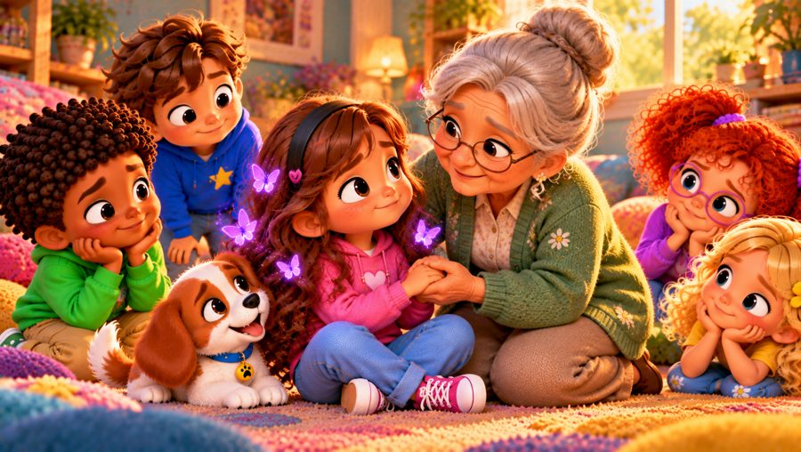

My Feelings Have a Name
A gentle feelings song for kids! 💛 Sing along with Max, Mia, Jay, Lily, Rosie and Buddy the puppy as they learn that every feeling has a name — happy, sad, angry, worried, excited and calm — and that all feelings are okay.
"My Feelings Have a Name" is a sing-along emotions song for kids that helps children recognise, name and talk about their feelings, and calm down with a big breath. Each feeling has its own colour, so even little ones can spot it: happy yellow, sad blue, angry red, worried purple, excited orange and calm green. With big karaoke lyrics on screen, it's perfect for preschool, kindergarten and early elementary kids (ages 3–8), at home or in the classroom.

▶💡 Why this skill matters: feelings
When children can name what they feel, big feelings become smaller and easier to handle. Naming feelings is the first step to calming down, asking for help and understanding others. Use feeling words every day (“You look frustrated”) and let your child know that every feeling is okay — it’s what we do with it that matters.
👨👩👧 What your child learns
- Naming feelings — happy, sad, angry, worried, excited, calm
- All feelings are okay — and they come and go like clouds
- Calming down: stop, take a breath, listen to your heart
- Talking about feelings and telling a grown-up
💬 Talk about it after the song
- How do you feel today?
- What makes you feel happy? What helps when you feel sad?
- What can you do when you feel angry or worried?
🏅 Quiz & Certificate
Watched the song together? Now read each question aloud — your child points to the right picture. Answer all 6 questions and your child earns a printable certificate!
🔒 The name is only used to draw the certificate on your device. We don't save or send anything.
You did it! 🎉
All 6 answers are right! Type your child's name to make the certificate.
🖨️ Free printables
Free for home and classroom use. Print on A4 or Letter paper.
🖼️ Scenes from the song




🎵 More songs


🎤 Lyrics – My Feelings Have a Name
Hey, hey!
How are you feeling today?
Happy?
Sad?
Angry?
Worried?
Every feeling has a name!
Let's find it together!
Sometimes I wake up smiling,
My heart feels light and bright,
I want to laugh and dance around,
Everything feels right!
That's happy, happy,
I know that feeling well,
When something makes me smile,
My face has lots to tell!
Stop for a moment,
Take a little breath,
Listen to your heart,
What is it trying to tell you?
My feelings have a name,
And they're all okay!
Happy, sad, angry,
Worried, excited, yay!
My feelings have a name,
I can say how I feel!
When I name my feelings,
I can understand what's real!
Feel it!
Name it!
Say it out loud!
My feelings have a name!
Sometimes I feel so sad,
I might want to cry,
Maybe something didn't work out,
And I don't know why.
Sad is sad,
And that's okay,
I can talk about my feelings,
And they can change one day.
Sometimes I feel angry,
My body feels so tight,
I can stop and take a breath,
And give myself some time.
Stop for a moment,
Take a little breath,
Listen to your heart,
What is it trying to tell you?
My feelings have a name,
And they're all okay!
Happy, sad, angry,
Worried, excited, yay!
My feelings have a name,
I can say how I feel!
When I name my feelings,
I can understand what's real!
Feel it!
Name it!
Say it out loud!
My feelings have a name!
Sometimes I feel worried,
Like butterflies inside,
I can tell a grown-up,
And I don't have to hide.
Sometimes I feel excited,
I jump and laugh and cheer!
My body feels so full of energy,
Because something fun is near!
Every feeling comes and goes,
Like clouds across the sky,
I can notice how I'm feeling,
And I can always ask, "Why?"
How do you feel?
Happy!
How do you feel?
Sad!
How do you feel?
Angry!
How do you feel?
Worried!
How do you feel?
Excited!
And when I need some quiet...
Calm!
I can breathe...
I can pause...
I can name what I feel!
I don't have to hide it,
I don't have to run,
My feelings are a message,
And knowing them is fun!
My feelings have a name,
And they're all okay!
Happy, sad, angry,
Worried, excited, yay!
My feelings have a name,
I can say how I feel!
When I name my feelings,
I can understand what's real!
Feel it!
Name it!
Breathe and choose!
Every feeling has a message,
And I can listen too!
My feelings have a name!
My feelings have a name!
How do you feel today?
Take a breath...
Think about it...
Name it!
"I'm feeling..."
That's okay!
My feelings have a name.